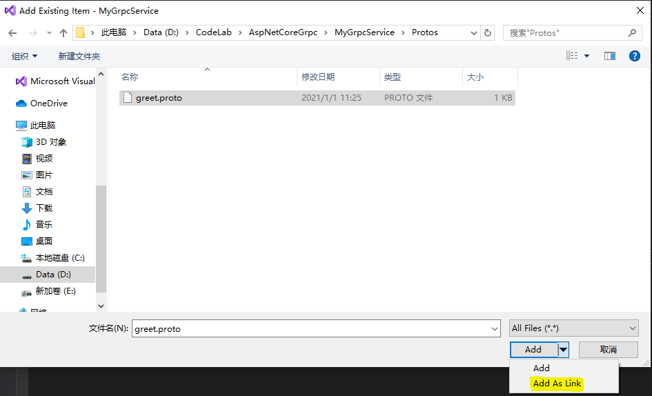
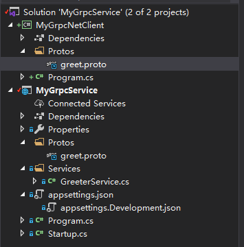
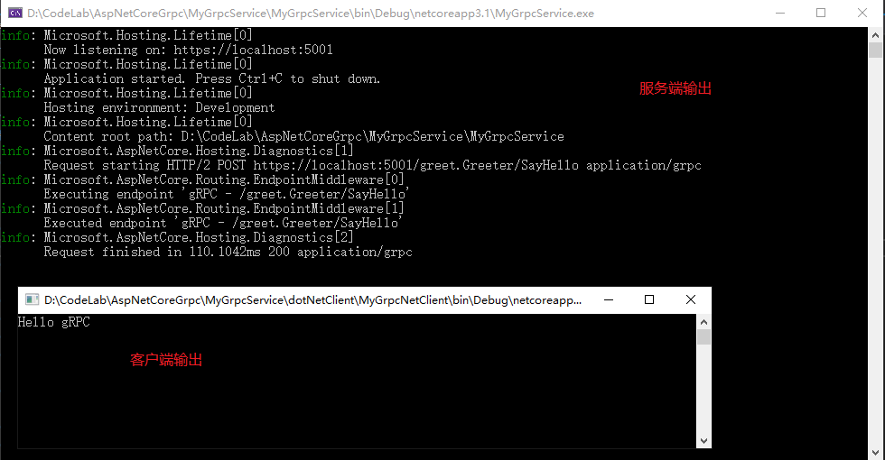

（二）通过.Net控制台客户端访问AspNetCore Grpc服务
通过前一篇（一）AspNetCore集成gRPC体验，我们创建了一个AspNetCore gRPC服务，现在我们就来看下如何通过.Net控制台客户端来访问gRPC服务的SayHello方法[1]。
-
首先打开我们之前创建的
MyGrpcService.sln解决方案，新建一个控制台类型的.NetCore工程，工程名称就叫MyGrpcNetClient，Framework版本为.NetCore3.1，并安装下面三个nuget包：- Grpc.Net.Client（选择安装目前的最新版本2.34.0）：包含gRPC功能的.NetCore客户端；
- Google.Protobuf（选择安装目前的最新版本3.14.0）：包含针对C#的protobuf消息APIs；
- Grpc.Tools（选择安装目前的最新版本2.34.0）：包含protobuf文件的C#工具支持；
-
导入或引用服务端定义的greet.proto文件，这里为了避免proto文件被复制到多处后可能产生版本不一致的问题，所以我们将Protos文件夹移动到与解决方案同一层目录，原来的服务端和新建的客户端都通过引用(Link)的方式导入proto文件，这样做还有有一些其他的好处，后续我们会说到。
- 在gRPC服务项目里，新建一个Protos文件夹（如果没有的话），将greet.proto文件通过引用的方式添加到项目中的Protos文件夹下（这里项目中的文件夹名字不一定非要是Protos，可以自定义），如图：
 - 确保代码能编译通过；
- 在上面新建的MyGrpcNetClient客户端项目中，也同样执行上面的操作；
- 这里对MyGrpcNetClient项目文件需要设置一下
GrpcServices="Client"，表示proto文件用来生成客户端契约代理类，设置如下1
2
3
4
5<ItemGroup>
<Protobuf Include="..\..\Protos\greet.proto" GrpcServices="Client">
<Link>Protos\greet.proto</Link>
</Protobuf>
</ItemGroup>
执行完上面的操作后，解决方案代码的目录看起来应该是这样的。
 - 在gRPC服务项目里，新建一个Protos文件夹（如果没有的话），将greet.proto文件通过引用的方式添加到项目中的Protos文件夹下（这里项目中的文件夹名字不一定非要是Protos，可以自定义），如图：
-
因为我们现在是共享proto文件，为了避免在服务端和客户端重复指定名称空间，我们把greet.proto中的
csharp_namespace定义option csharp_namespace = “MyGrpcService”;去掉，通过包名来标识。相应的修改下GreeterService.cs名称空间使得代码编译通过。 -
现在我们来添加实际的客户端调用gRPC服务的代码，打开MyGrpcNetClient项目中的Program.cs文件，并增加如下内容：
1
2
3
4
5
6
7
8
9
10
11
12
13
14
15
16
17class Program
{
static void Main(string[] args)
{
var channel = GrpcChannel.ForAddress("https://localhost:5001");
var client = new Greeter.GreeterClient(channel);
var response = client.SayHello(new HelloRequest
{
Name = "gRPC"
});
Console.WriteLine(response.Message);
Console.ReadKey();
}
} -
先运行gRPC服务端，在运行客户端，最终我们将看到如下内容：

¶结语
到这里我们就通过 .Net Console App完成了gRPC服务的调用，客户端代码写起来是不是很简洁。接下来我们将看下怎么通过AspNetCore的客户端来访问这个SayHello的gPRC服务。
¶源码
Demo代码已经上传 https://github.com/jeremyLJ/aspnetcore-grpc-demo